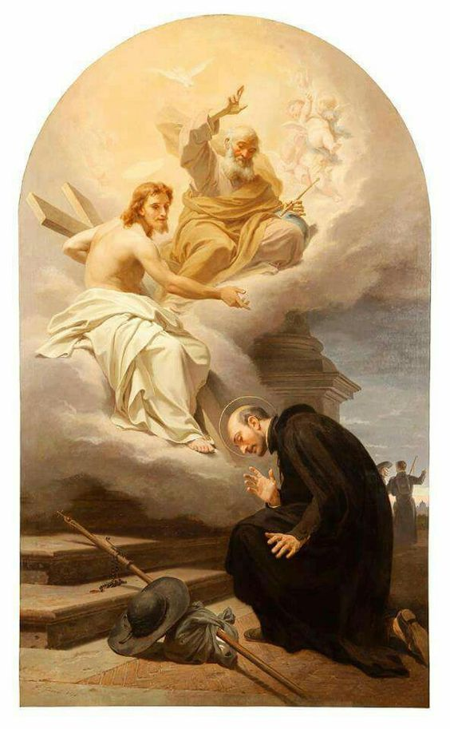

Kto napisał Ćwiczenia Duchowe?
Św. Ignacy Loyola

Autorem Ćwiczeń Duchowych jest św. Ignacy Loyola (1491–1556) — założyciel Towarzystwa Jezusowego, jednego z największych i najbardziej wpływowych zakonów w historii Kościoła. Duchowość ignacjańska przyniosła Kościołowi niezliczone owoce świętości i apostolstwa. Wystarczy wspomnieć wielkich świętych Towarzystwa Jezusowego, takich jak św. Franciszek Ksawery, św. Piotr Faber, św. Robert Bellarmin, św. Alojzy Gonzaga, św. Stanisław Kostka czy św. Piotr Klawer — wszystkich uformowanych w duchu Ćwiczeń św. Ignacego.
Niegdyś znany jako Íñigo de Loyola, Ignacy był dworzaninem i żołnierzem w służbie króla Hiszpanii. W 1521 roku, podczas bitwy pod Pampeluną, został ciężko ranny. W czasie długiej rekonwalescencji przeszedł głębokie nawrócenie. Czytając żywoty świętych i rozważając poruszenia własnego serca, zaczął odkrywać, jak różne myśli prowadzą człowieka albo ku Bogu, albo od Niego oddalają.
Porzuciwszy dawne życie, udał się do Manresy, gdzie poświęcił się modlitwie i pokucie. Tam — jeszcze jako świecki — zaczął spisywać to, czego uczył go Bóg w modlitwie i wewnętrznym rozeznawaniu. Z tych doświadczeń narodziła się Księga Ćwiczeń Duchowych: krótka, lecz niezwykle głęboka metoda modlitwy i rozeznawania, pomagająca człowiekowi „uporządkować swoje życie i odnaleźć wolę Bożą”.
Ojciec Juan Alfonso de Polanco pisał, że w Manresie sam Bóg „uczył” Ignacego Ćwiczeń. Sam św. Ignacy wspominał później w swojej Autobiografii: „Bóg obchodził się ze mną jak nauczyciel ze swoim uczniem.”
Na fundamencie tej duchowości św. Ignacy założył w 1540 roku Towarzystwo Jezusowe. W ciągu następnych stuleci zakon rozwinął się na wszystkich kontynentach: w czasach swojej największej ekspansji obejmował tysiące jezuitów pracujących w Europie, obu Amerykach, Azji i Afryce, prowadząc misje, szkoły i dzieła apostolskie w dziesiątkach krajów. U podstaw tej formacji zawsze pozostawały Ćwiczenia Duchowe — szkoła modlitwy, rozeznania i całkowitego oddania się Bogu.
Narodziny Ignacego Loyoli w Kraju Basków.
Rana pod Pampeluną i początek drogi nawrócenia.
Zatwierdzenie Towarzystwa Jezusowego.
Śmierć św. Ignacego w Rzymie.